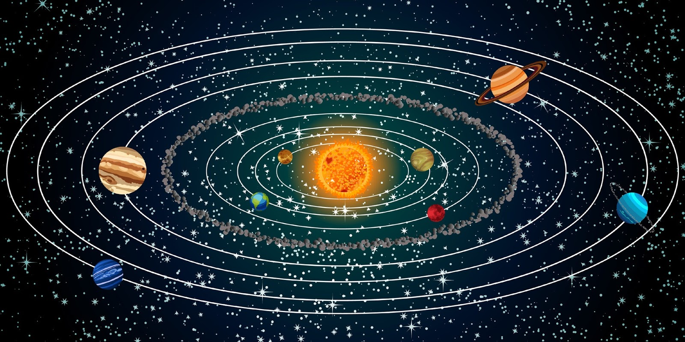

|
Ana Sayfa | Güneş Sistemi | Gezegenler | Uydular Ve Küçük Gök Cisimleri | Yıldızlar | Galaksiler Ve Evren | Uzay Araştırmaları Ve Keşifler | Gelecek Ve Bilimsel Tarışmalar | |
|

Güneş Sistemimizi TanıyalımGüneş Sistemi, merkezinde yer alan Güneş ve onun etrafında dönen gezegenler, uydular, asteroitler, kuyruklu yıldızlar ve göktaşlarından oluşan dev bir sistemdir. Yaklaşık 4,6 milyar yıl önce, büyük bir gaz ve toz bulutunun çökmesiyle oluşmuştur. Bu çökme sonucunda merkeze yoğunlaşan madde Güneş’i, çevresinde kalanlar ise gezegenleri oluşturmuştur. Güneş Sistemi’nde sekiz gezegen bulunur. Güneş’e yakınlık sırasına göre bunlar Merkür, Venüs, Dünya, Mars, Jüpiter, Satürn, Uranüs ve Neptün’dür. Merkür, yüzey sıcaklığı çok yüksek olan kayalık bir gezegendir. Venüs, yoğun karbondioksit atmosferi nedeniyle sera etkisiyle en sıcak gezegendir. Dünya, üzerinde yaşam bulunan tek gezegen olarak bilinir. Mars, kızıl rengiyle dikkat çeker ve gelecekte insanlı keşiflerin hedefidir. Dış gezegenler olan Jüpiter, Satürn, Uranüs ve Neptün, gaz ve buz devleridir. Jüpiter en büyük gezegendir; Satürn ise geniş halkalarıyla tanınır. Uranüs yatık ekseniyle döner, Neptün ise Güneş’ten en uzak gezegendir. Güneş Sistemi’nin yalnızca gezegenlerden ibaret olmadığını unutmamak gerekir. Asteroit Kuşağı Mars ve Jüpiter arasında yer alır, burada binlerce kaya parçası Güneş’in etrafında döner. Ayrıca Kuiper Kuşağı ve Oort Bulutu gibi bölgelerde de sayısız donmuş cisim bulunur. Tüm bu yapılar Güneş’in kütle çekimi sayesinde bir arada durur. Güneş, sistemdeki toplam kütlenin yaklaşık %99,8’ini oluşturur. Bu muazzam güç, gezegenlerin yörüngede kalmasını sağlar. Güneş Sistemi, evrenin küçük ama son derece karmaşık bir parçasıdır. İnsanlık, uzay araştırmalarıyla bu sistemin sırlarını çözmeye ve gelecekte başka gök cisimlerinde yaşam olasılığını keşfetmeye çalışmaktadır. |
ADRES : Adıyaman merkez mahalesi
|